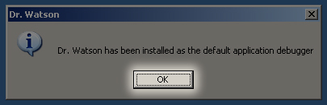

Crash logs are incredibly useful when trying to track down a bug, especially if it's not immediately reproducible.
Windows XP
Windows XP does not automatically log crashes like OS X, but it does include Dr. Watson, an easy to set up tool that can be
configured to log them.
-
In the Start menu's Run box or from a DOS or Cygwin prompt, enter the command drwtsn32 -i.

-
A dialog box will appear informing you that Dr. Watson has been installed as the default debugger. Press OK.

-
Crash information will now be logged to the user.dmp file in
C:\Documents and Settings\All Users\Application Data\Microsoft\Dr Watson\.
Dr. Watson will create a user.dmp file that records what WebKit was doing when it crashed.
Be careful as it is overwritten with every crash.
When reporting a WebKit bug, please upload the user.dmp file if possible.
-
Running drwtsn32 without any options or switches will bring up a window that allows you to change various
setting such as moving the log folder to a more easily accessible location or throwing a visual alert letting
you know it caught the crash.

Windows Vista
Windows Vista does not include Dr. Watson. Instead, Windows Error Reporting (WER) has been integrated into the operating system.
By default, Vista uploads the crash logs to Microsoft, but does not save a local copy. This is configurable via the registry.
-
Save the following text to a file named wer.reg:
Windows Registry Editor Version 5.00
[HKEY_LOCAL_MACHINE\SOFTWARE\Microsoft\Windows\Windows Error Reporting]
"ForceQueue"=dword:00000001
Double-click the file from Windows Explorer and respond affirmatively to any prompts.
Reboot
The next time Safari (or any other application) crashes, the crash information will be written into a folder located inside %LOCALAPPDATA%\Microsoft\Windows\WER\ReportQueue.
Check the modification date to make sure you are using the correct file.
Be sure to include the following files in your bug report:
- WERxxxx.tmp.mdmp
- This is the most important file. It contains the crash dump that can be opened inside Visual Studio or other Windows debuggers.
- WERxxxx.tmp.version.txt
- Contains the operating system version and other hardware information.
- WERxxxx.tmp.appcompat.txt
- Lists all of the DLLs loaded at the time of the crash with their version information.